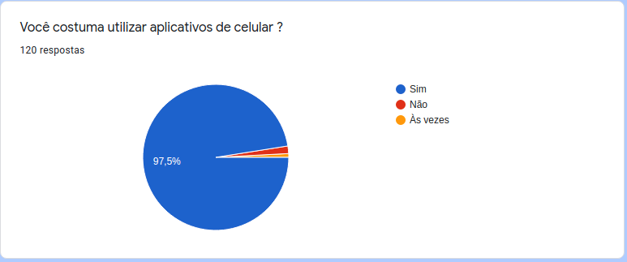
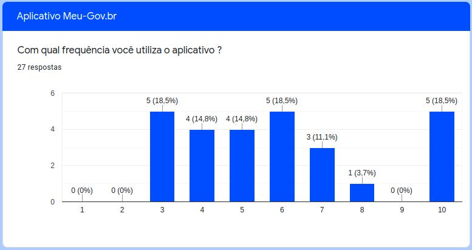
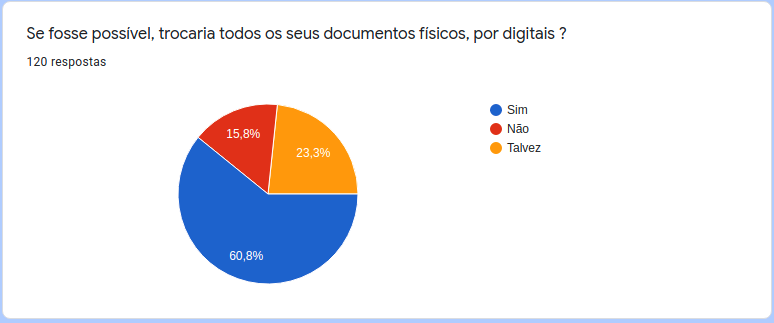
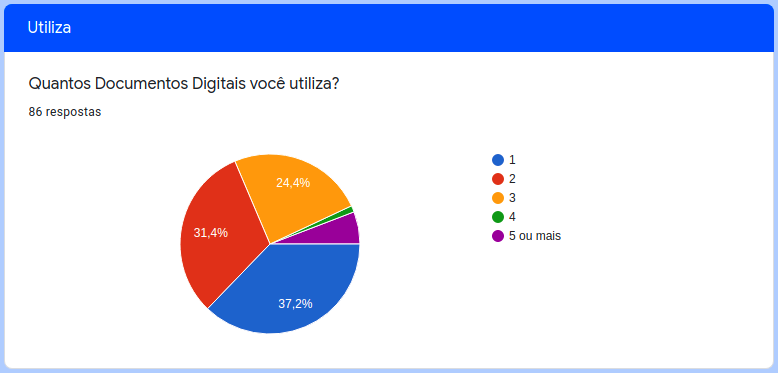
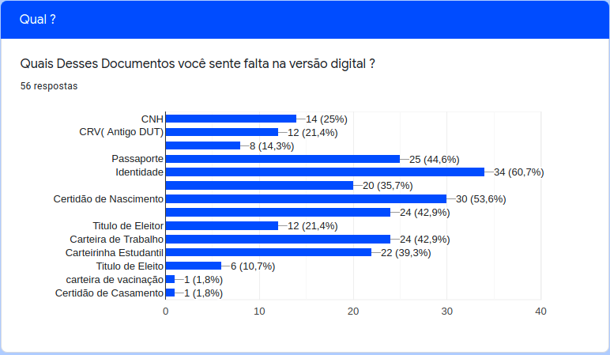
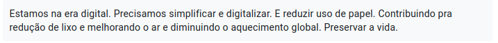

Questionário
Histórico de Versões
| Data | Versão | Descrição | Autores | Revisor |
|---|---|---|---|---|
| 28/02/2021 | 0.1 | Criação do documento | Luis Marques | Eduarda Servidio |
| 07/03/2021 | 0.2 | Adição de imagens, introdução e aplicação de tecnicas | Luis Marques | Eduarda Servidio |
| 08/03/2021 | 0.3 | Adição de requisitos | Luis Marques | Eduarda Servidio |
| 08/03/2021 | 0.4 | Correção de erros e melhora do visual | Eduarda Servidio | Luis Gustavo |
| 09/03/2021 | 0.5 | Correção Para mostrar índice corretamente, inclusão de referências | Luis Marques | Eduarda Servidio |
| 21/03/2021 | 0.6 | Explicação e explicitação de perguntas do questionação | Luis Marques | Eduarda Servidio |
| 21/03/2021 | 0.7 | Correção de Erros de Digitação e Ortográficos | Eduarda Servidio | Luis Gustavo |
Introdução
O questionário (ou pesquisa de opinião) consiste na aplicação de um conjunto de perguntas aos usuários, e posterior análise das respostas. É uma técnica que permite uma obtenção rápida de informações, qualitativa e quantitativa de um público numeroso.
Esta técnica é interessante, principalmente quando aplicada de forma online, para obtenção de uma grande quantidade de dados de forma simples, eficiente e de baixo custo.
Aplicação da técnica

O grupo montou um questionário, pela ferramenta Google Forms, com 15 perguntas. Sendo a última uma questão aberta solicitando um feedback sobre novas funções ou uma sugestão que o usuário quisesse apontar. A depender das respostas que os usuários davam, perguntas diferentes apareciam para eles, visto não fazer sentido perguntar há uma pessoa que não utiliza o aplicativo meu-gov.br, a experiência dela com o aplicativo, por exemplo. Nosso Questionário foi aplicado entre os dias 01/03/2021 até o dia 06/03/2021, sendo divulgado pelas redes sociais dos integrantes, e por outros usuários que acabavam compartilhando este formulário com outras pessoas, quando esses dados foram colhidos para análise. Tivemos 120 respostas.
Como o formulário alterava as perguntas com base nas respostas anteriores dos usuários, por apresentar diversos caminhos possíveis vamos fazer esta diferenciação ao decorrer do texto, de forma a como vamos apresentando estes resultados. O termo documentos digitais indicados abaixo representam os documentos oficiais de identificação ou de posse, como CNH, CPF, identidade, certidão de nascimento, etc.
Resultados
Texto inicial
Bem, iniciamos com um breve texto explicando o porque estamos realizando o questionário, informando que as informações nele preenchidas irão permanecer de forma anônima e informando o seu tempo de preenchimento médio.

Imagem 1. Texto inicial apresentado aos usuários.
Qual o seu gênero?
Após este texto inicial, foi perguntado aos participantes qual era o seu gênero, de forma a perceber qual era o gênero predominante que estava respondendo aquele questionário. Pode-se analisar, pelas respostas apresentadas, que a maioria dos participantes (56,7%) são do gênero masculino. Seguidos por 40,8% de participantes do gênero feminino e o restante(2,4%) preferiram não informar o seu gênero.

Imagem 2. Pergunta sobre o gênero.
Qual a sua idade?
Seguindo o questionário, temos a pergunta sobre a idade dos participantes. Para facilitar a compilação e não causar constrangimento aos participantes, separamos as idades em grupos. A maioria dos participantes responderam ter entre 18 e 24 anos.

Imagem 3. Pergunta sobre a idade.
Você costuma utilizar aplicativos de celular?
Na pergunta seguinte, foi questionado se o participante utilizava aplicativos no celular. Como já era esperado pelos participantes do grupo, a maioria dos participantes (97,5%) responderam que utilizam aplicativos.

Imagem 4. Pergunta sobre utilização de aplicativos no celular.
Você utiliza o aplicativo Meu-gov.br?
Nesta pergunta, foi questionado ao usuário se este utilizava o aplicativo meu gov.br. Tivemos uma maioria de respostas negativas (77,5%). A resposta desta pergunta alterava as perguntas apresentadas no questionário, indo para o subgrupo de pesquisa de opinião sobre o aplicativo específico.

Imagem 5. Pergunta sobre utilização do App Meu-gov.br.
Caso seja informado que utiliza App Meu-gov.br:
Com qual frequência você utiliza o aplicativo?
Apenas para os participantes que responderam utilizar o aplicativo Meu-gov.br, foi perguntado com qual frequência estes utilizavam o aplicativo. Os participantes então enumeraram de 1 a 10: sendo 1 nunca utilizo e 10 utilizo diariamente. Tivemos uma concentração de respostas no centro (entre 3 e 6), com um número representativo de participantes respondendo que utilizam o aplicativo todo dia.

Imagem 6. Frequência de utilização do Meu-gov.br.
Como você classificaria sua experiência de uso com o aplicativo?
Foi perguntado então, como os participantes classificariam sua experiência com o aplicativo. Os participantes então enumeraram de 1 a 10: sendo 1 péssima e 10 Ótima. A maioria dos usuários classificaram sua experiência entre 6 e 10.

Imagem 7.Como classifica sua experiência com o aplicativo.
O quão útil você considera o aplicativo?
Para os usuários do aplicativo Meu-gov.br foi então solicitado que estes classificassem o quão útil consideravam o aplicativo, sendo 1 totalmente inútil e 10 muito útil.

Imagem 8. Utilidade do aplicativo.
Perguntas a todos os participantes
Você trocaria todos os seus documentos físicos por digitais?
Finalizada as perguntas feitas especificamente aos usuários que utilizavam o App Meu-gov.br, voltamos a toda a amostra de participantes. Perguntamos se eles trocariam seus documentos físicos por documentos digitais. A maioria dos usuários responderam que sim ou talvez, indicando que boa parte dos participantes estariam dispostos a trocar seus documentos físicos por digitais.

Imagem 9. Troca de documentos físicos por digitais.
Você costuma utilizar Documentos Digitais no seu dia a dia ?
A pergunta a seguir também criava uma ramificação no questionário. As pessoas que informavam que não utilizavam documentos digitais, eram encaminhadas para um questionário; enquanto as pessoas que informavam utilizar documentos digitais, eram encaminhadas para outro.

Imagem 10. Utilização de documentos digitais no dia a dia.
Caso seja informado que não utiliza documentos digitais:
Para os participantes que informaram não utilizar documentos digitais, foi perguntado o motivo por não utilizar. Podendo um mesmo participante selecionar mais de um motivo para esta não utilização. Tivemos diversas respostas para este quesito, sendo a mais recorrente "O governo não autorizar o uso por parte dessas pessoas", seguidos do "desconhecimento da existência destes documentos" e a preferência pela utilização de documentos físicos por receio de armazenamento de dados sensíveis no celular.

Imagem 11. Motivo de não utilizar documentos digitais.
Caso seja informado que utiliza documentos digitais:
Quantos Documentos Digitais você utiliza?
Para os participantes que informaram utilizar documentos digitais, foi realizado outro conjunto de perguntas. A primeira pergunta sobre a quantidade de documentos digitais utilizados por essa pessoa. Tivemos uma quantidade de respostas bem diversificadas, sendo a maioria das respostas entre 1 e 3 documentos.

Imagem 12. Quantos documentos digitais você utiliza?
Com qual frequência você utiliza esses documentos?
Em seguida foi perguntado a frequência de utilização desses documentos digitais: sendo 1 utilizo raramente e 10 utilizo diariamente. Podemos perceber uma tendência central de respostas (5 e 6), podendo estas serem uma tendência real de utilização em algumas ocasiões ou causada por uma predição humana de padrão central nas suas avaliações.

Imagem 13. Frequência de utilização de documentos digitais.
Sente falta de algum documento que ainda não possui versão digital?
Por fim, para os usuários que responderam utilizar documentos digitais, foi perguntado se estes sentem falta de algum documento em sua versão digital. Tivemos 56 respostas afirmativas para estas perguntas. Sendo essas 56 pessoas redirecionadas para uma última pergunta sobre qual o documento digital que sentem falta.

Imagem 14. Falta de algum documento na versão digital.
Qual?
Pode-se perceber que apesar de alguns documentos já possuírem versão digital como, por exemplo: CNH, Título Eleitoral, Carteira de Trabalho e Certificados Militares, diversas pessoas sentem falta dessa disponibilidade em formato digital (seja por uma propaganda maior sobre sua existência ou uma maior disponibilidade por parte dos órgãos competentes). O documento que teve maior quantidade de marcações sobre sua ausência no meio digital foi a Identidade, seguidos por Certidão de Nascimento e Certificado de Conclusão de Curso (Diplomas Universitários ou Conclusão do Ensino Médio). Estes documentos não estão disponíveis em meios digitais e contaram como requisitos não atendidos pelo Aplicativo.

Imagem 15. Quais documentos estão em falta na versão digital.
Feedbacks finais
Por fim foi solicitado a todos os participantes, independente de suas respostas, que dessem uma sugestão, tanto referente ao questionário como a utilização de documentos digitais. Por ser uma pergunta opcional tivemos 17 respostas, sendo a mais recorrentes: "não", "top", "muito bom" e outras que não representavam opinião sobre o projeto ou sobre o questionário. Selecionamos assim, 5 feedbacks que servirão para aprimoramento do projeto ou de questionários futuros sobre a elicitação de requisitos.
Feedback 1.
Começamos a análise por um feedback sobre o reconhecimento facial do aplicativo.

Imagem 16. Feedback 1.
Feedback 2.
O segundo Feedback evidencia uma falta de disponibilidade de documentos digitais.

Imagem 17. Feedback 2.
Feedback 3.
O terceiro Feedback também fala sobre uma falta de disponibilidade de documentos digitais, evidenciando suas vantagens ecológicas e na simplificação de seu uso se comparado aos documentos físicos.

Imagem 18. Feedback 3.
Feedback 4.
O quarto Feedback fala sobre a falta de funcionalidades do aplicativo

Imagem 19. Feedback 4.
Feedback 5.
O quinto e último deedback é direcionado ao questionário. Indicando uma falta de abordagem sobre o risco do uso de documentos digitais, o que evidencia uma falta de informação do questionário em explicitar a sua segurança com relação às dúvidas apresentadas.

Imagem 20. Feedback 5.
Análise
Pode-se perceber, pela análise das respostas, que boa parte das pessoas estão dispostas a realizar a troca da maioria de seus documentos físicos para uma versão digital. A maioria das pessoas não conheciam o aplicativo Meu gov.br, muito possivelmente por uma falta de informação e propaganda para a utilização do aplicativo, como a falta de funcionalidades que poderiam estar disponíveis neste aplicativo. Uma parte considerável dos participantes também preferiram não utilizar o app Meu gov.br ou outro aplicativo de documentação digital por não se sentirem seguras ao armazenar dados sensíveis no meio digital.
Requisitos
Os requisitos levantados por este método foram:
| ID | Descrição |
|---|---|
| 1 | O login do usuário deve ser armazenado, de forma que ele não precise fazer login a cada entrada no aplicativo |
| 2 | O sistema deve disponibilizar em formato digital o Certificado de Dispensa de incorporação/certificado de reservista |
| 3 | O sistema deve disponibilizar em formato digital o CRV |
| 4 | O sistema deve disponibilizar em formato digital o Passaporte |
| 5 | O sistema deve disponibilizar em formato digital a Identidade |
| 6 | O sistema deve disponibilizar em formato digital a Certidão de Nascimento |
| 7 | O sistema deve disponibilizar em formato digital o Título de Eleitor |
| 8 | O sistema deve disponibilizar em formato digital a Carteira de Trabalho |
| 9 | O sistema deve disponibilizar em formato digital a Carteira de Vacinação |
| 10 | O sistema deve disponibilizar em formato digital a Certidão de Casamento |
Referências
VAZQUEZ,Carlos,SIMÕES,Guilherme, Engenharia de Requisitos,1ª edição,Editora Brasport,10 de agosto de 2016.